Your baby is one of three.
A teacher for every three children, from six months to five years, in English and 中文, with a photo update to your WhatsApp every afternoon. Families of every background are welcome, and English alone is enough.
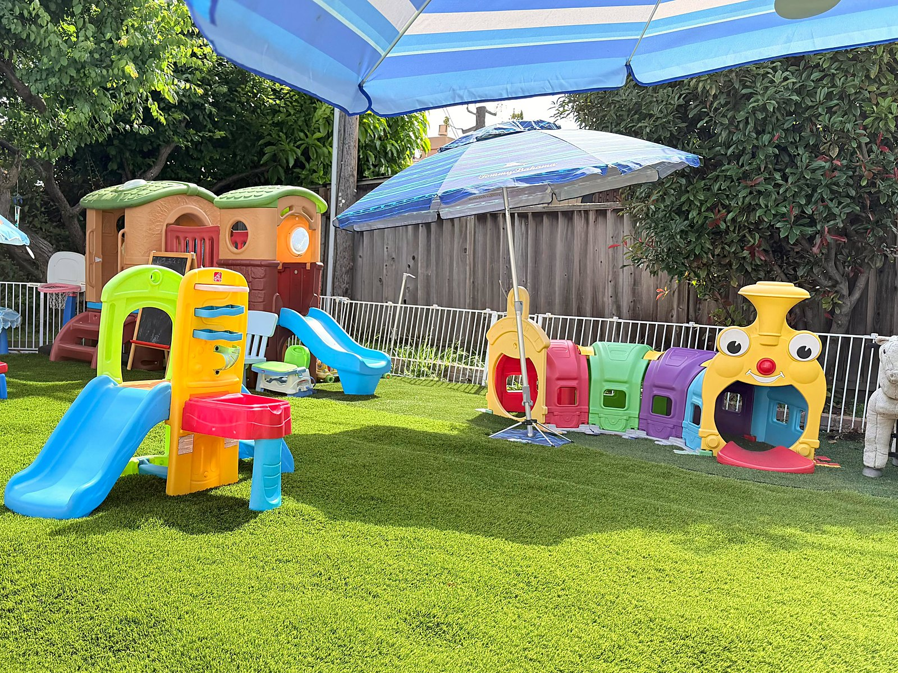
The back gardenStart with the facts.
These are the answers I give at every first visit.
- Hours
- 8:30 am to 6 pm
- Ages
- 6 months to 5 years
- Ratio
- 1:3, one teacher per three children
- Languages
- English + 中文
- Licensed
- California family daycare
- Certified
- Red Cross pediatric first aid
Love first, and the learning follows.
Play is the lesson
A play-based, bilingual day. Reading, blocks, and a Mandarin song in the morning; the back garden, music, and a project small hands can hold in the afternoon. Phonics, early math, arts and crafts, and fine-motor work live inside that play.
We celebrate
Birthdays get a party. And when a child moves on to preschool, we hold a small graduation.
Small on purpose
Each teacher keeps a group of three, and there are usually three or four teachers in the home. If one baby needs holding all morning, their teacher can, and the other two still get their morning.
Today, 4:52 pm
Ate: most of the rice bowl with tofu, plus pear slices.
Napped: 12:40 to 2:10, settled easily today.
Did: stacked blocks a long while, then a song in 中文, then the garden.
The same rhythm every day, and never like school.
Morning 上午
Arrival and a gentle transition. Welcome play, breakfast, morning meeting, calendar time, then blocks, quiet toys, crafts, painting, and coloring.
Midday 中午
Outdoor movement, fruit, lunch together, phonics, story circle, and a quiet nap or rest period.
Afternoon 下午
Wake-up snack, outdoor play, music, dance, movement, simple STEM discovery, puzzles, problem-solving, and free play. Then a WhatsApp recap with photos and notes.
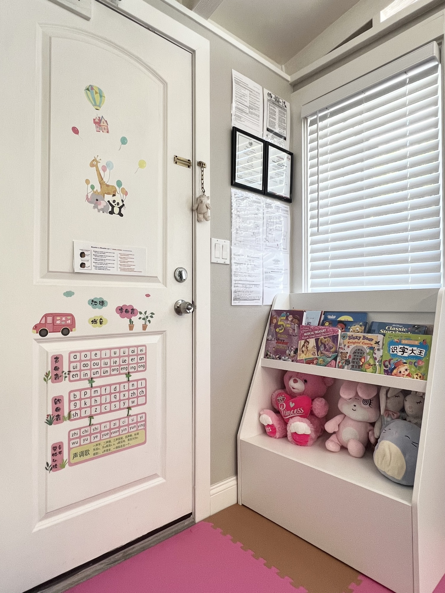
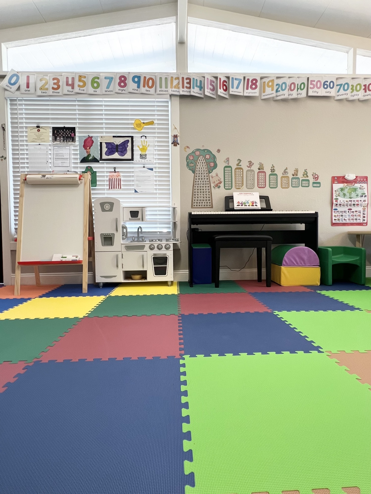
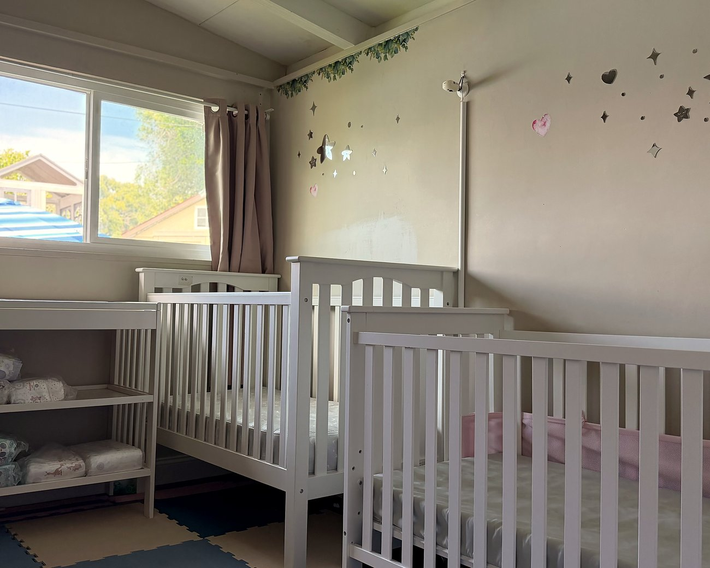
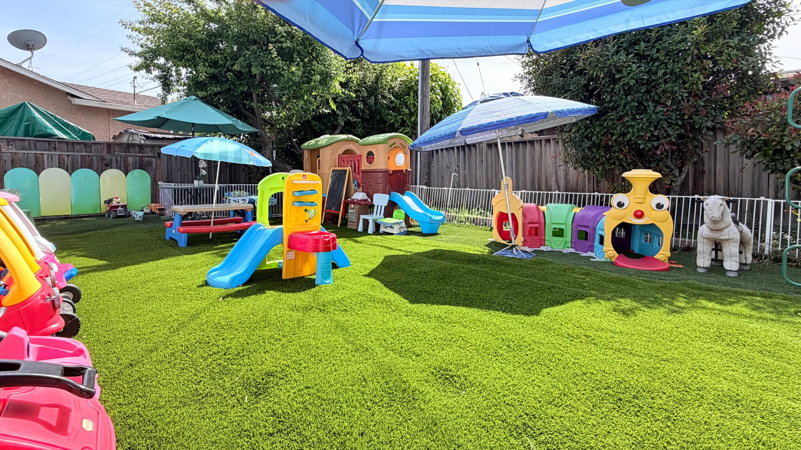
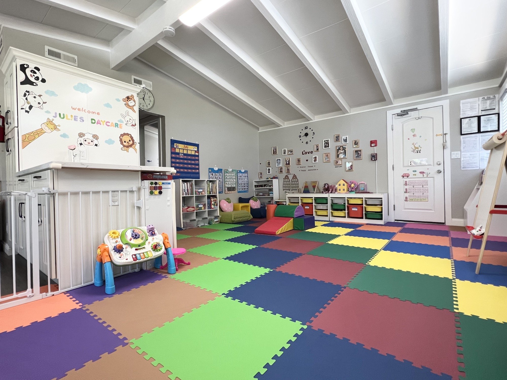
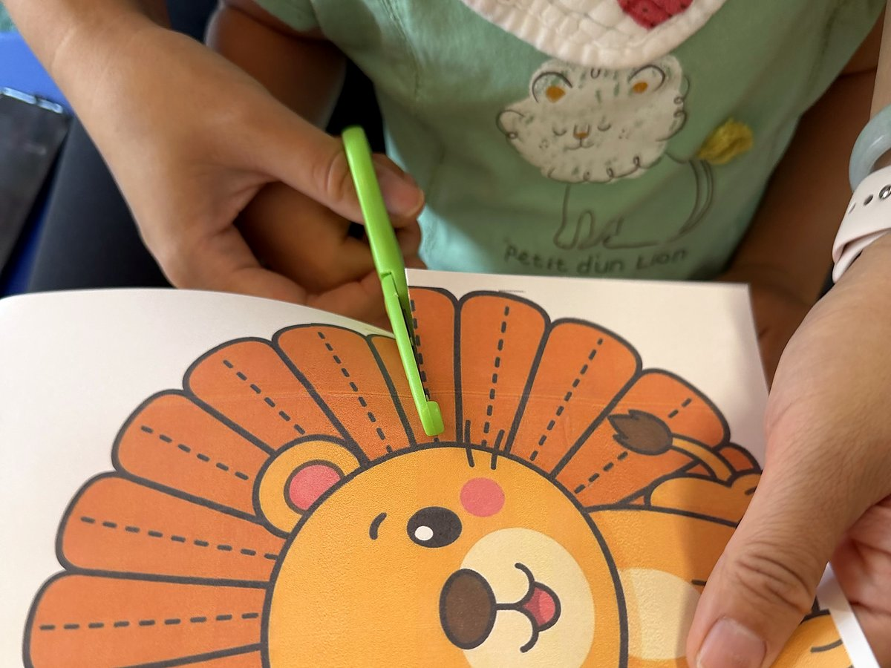
The four words I run this home by.
Parents ask what my philosophy is. It fits in four words, and they are the same in English and in Chinese.
We go slowly. I pace the day to the child in front of me, not to a clock on the wall.
I keep the house warm. Meals are cooked here, there is always a lap to sit on, and a note goes home at the end of every day.
Play is the work here. Phonics, math, and fine-motor practice all arrive through blocks, songs, and the garden.
This is one home, where every teacher keeps a group of three. I know every child by name.
Children from many backgrounds grow up together here, and English alone is enough.
Breakfast + lunch, included from 18 months · 餐食
Meals are cooked at home,
included from 18 months.
From 18 months, you do not need to pack breakfast or lunch. I cook for the children myself, every day, and food is reheated by steam, not microwave. For younger babies, I warm the milk; the rest we plan together at your visit.
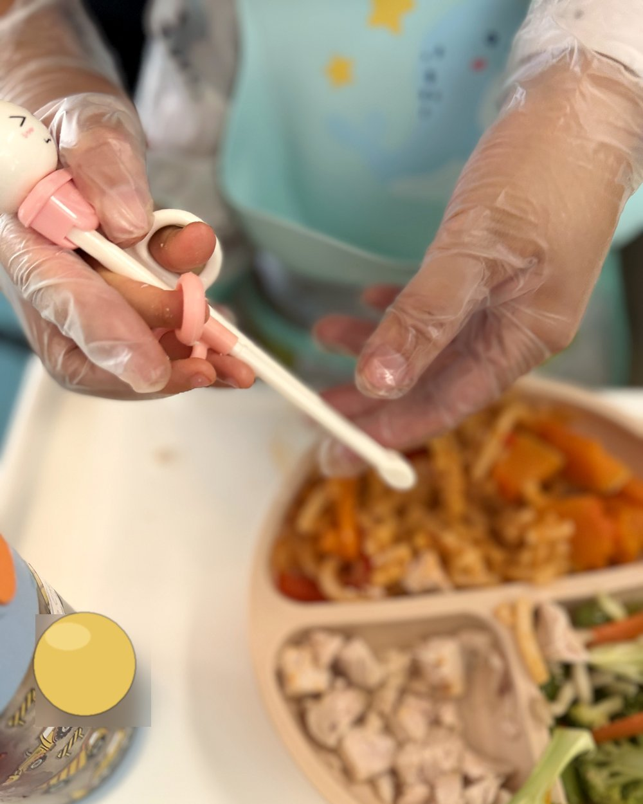
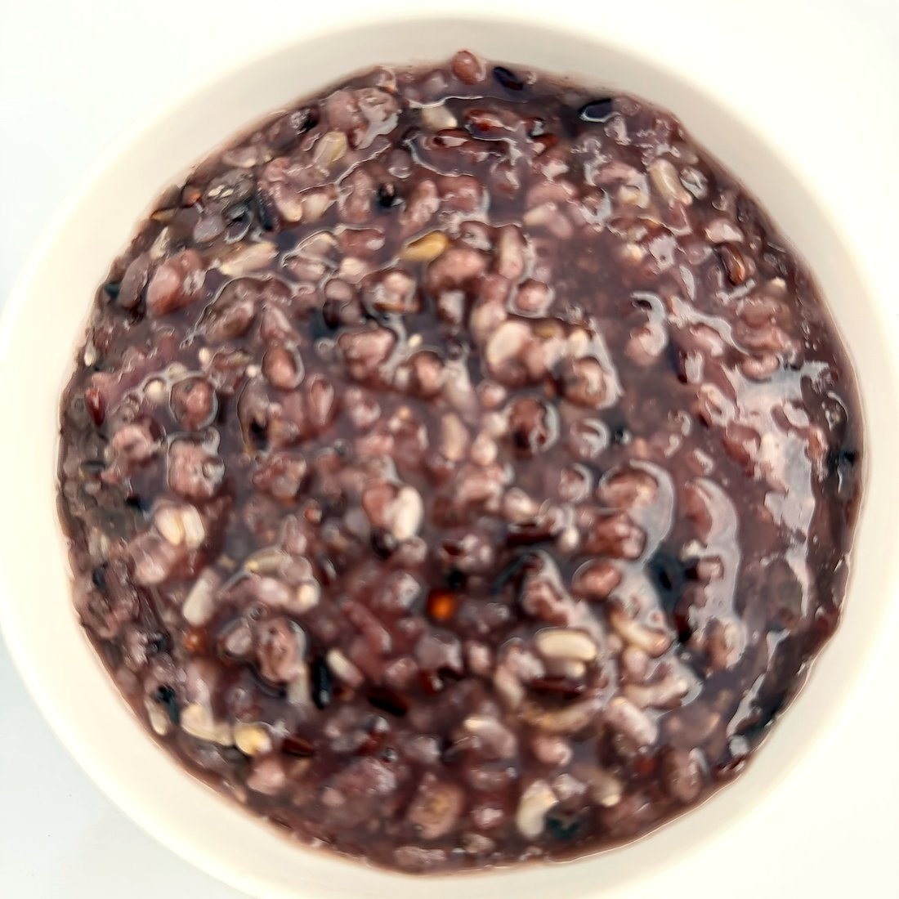
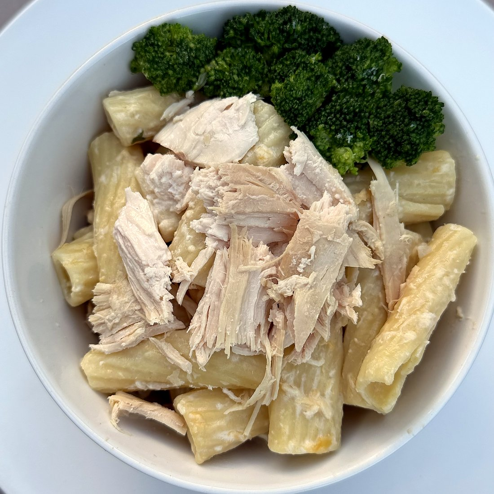
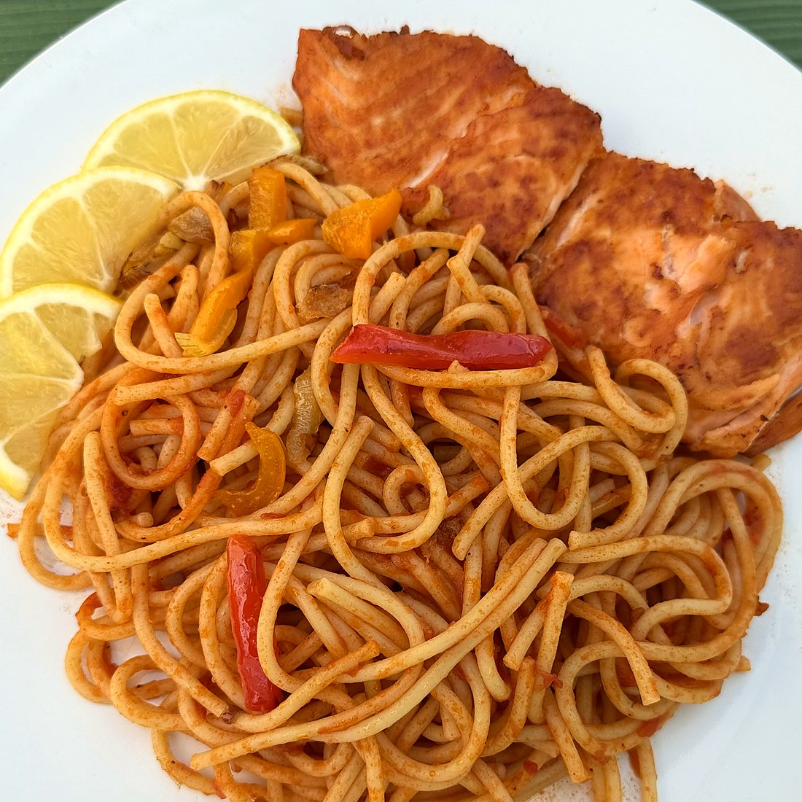
Choose the days that fit your family.
- Full-time
- Monday through Friday, 8:30 am to 6:00 pm.
- Half-time or part-time
- A morning or an afternoon session, or only certain days of the week.
- Drop-in
- Short-term care, based on availability.
- Summer camp
- Seasonal program for school breaks.
I accept children from six months through age five. Openings vary by age, so ask me what is open right now.
Julie, here every day.
I trained as a fine artist before I trained as an educator, and both still show up in the day. I have looked after children in Sunnyvale for 10 years, from a single belief: love first, education with intention. Each child grows at their own pace; my job is to notice that pace and meet it.
Children feel safe here first, then learn with their hands.
The license and the first-aid certificate hang on the entryway wall. Parents read them on the way in.
In parents' own words 家长的话
Our daughter started at Julie's around 6 months old and stayed for about 2 years. She learned how to speak some Mandarin, how to walk, and how to eat different types of food. Julie takes pride in the food she serves. It is nutritious and varied. My daughter sometimes asks about Auntie Julie on the weekend. That shows how loving the teachers are toward the kids. Lina, Maxine's mom · two years here
Wonderful care provided by Julie and her staff. The biggest thing we like about this daycare is that Julie genuinely cares about the kids. She makes sure that they eat well, get plenty of play time, and have the appropriate nap time. She is like family. We are very lucky to have her. Jason, parent · April 2026
My little one adjusted in just a couple of days. The children's areas are very clean, baby-proofed with matted floors and baby gates, and there is a well-equipped backyard play area. Julie sends regular photo updates throughout the day and a detailed end-of-day report with meal times, nap times, diaper updates, and activities. She is flexible and takes each child's needs into account. Divya, Nila's mom · one month in
The things parents ask first.
What ages do you accept?
Six months through five years: infants, toddlers, and preschoolers. Openings vary by age, so ask me what is open right now.
What are the hours?
8:30 am to 6:00 pm, Monday through Friday. Half-time, part-time, drop-in, and summer options also available.
What do meals look like?
From 18 months, breakfast and lunch are included in every program, cooked at home and reheated by steam, not microwave. For younger babies, I warm the milk; the rest we plan together at your visit.
Who takes care of the children?
Julie and a small team of teachers, usually three or four, each with a group of three children. You meet everyone at your visit.
Do you send daily updates?
Yes. I send a WhatsApp message to each family every afternoon with photos and notes from the day.
What languages are spoken?
English and Mandarin, mixed naturally through the day. I speak both, and English alone is enough for your child and for you.
Is it only for Chinese-speaking families?
No. Families here come from many backgrounds, and no Chinese is needed at home. The day runs in English as much as 中文, and Mandarin is something your child picks up, not a requirement.
Is the daycare licensed?
Yes. This is a California state-licensed family child care home. License details are shared during your visit.
What is tuition?
Tuition depends on the program and schedule, so I give every family a personal rate at the visit.
Are there openings right now?
It depends on the age. Ask me. I will tell you honestly what is available, or invite you onto the waitlist.
What about sick days and holidays?
Full policies are shared during your visit so we can walk through them together. If I am sick, I close for the day.
Come see the home in person.
The best way to choose a daycare is to stand in it. A visit takes about thirty minutes on a weekday afternoon: you meet me, you see the rooms, and you can ask anything. Bring the baby.
Visit Julie · 联系方式
Message me with your child's age and when you hope to start, and I will tell you what is open.
Message me on WhatsAppDuring the day I am with the children, so I cannot answer calls in real time. A text or WhatsApp message works best; I reply once the children are settled.